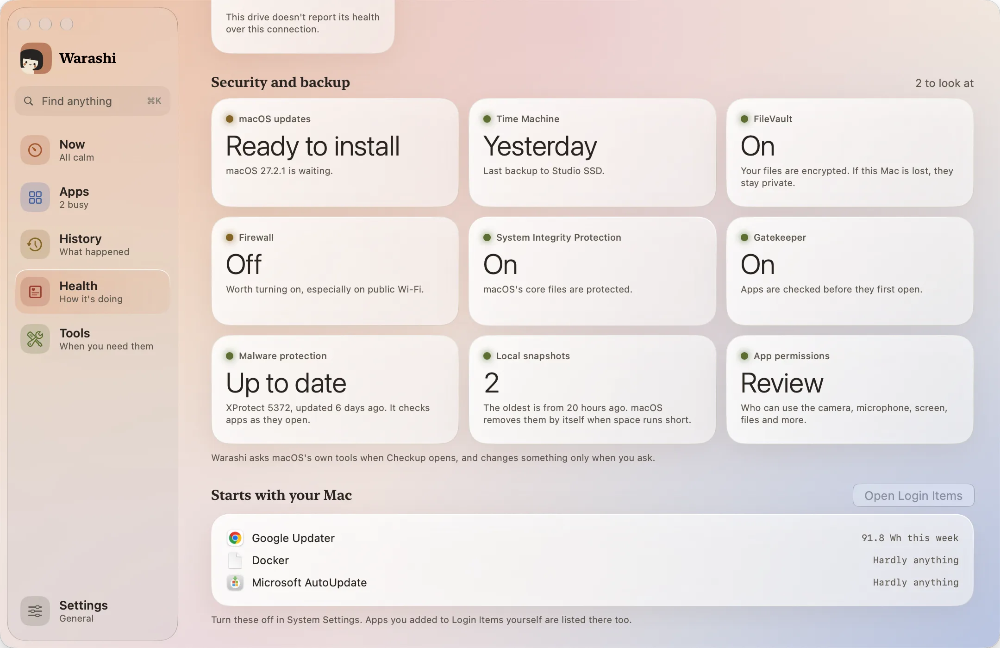

Pemeriksaan adalah tab pertama di Kesehatan (⌘4). Tab ini melihat seminggu terakhir dan menjawab satu pertanyaan: apakah Mac Anda dalam kondisi baik?


Vonisnya
Di bagian atas: Mac Anda dalam kondisi baik., atau hal yang perlu dilihat, dengan kata-kata sederhana. Di sebelahnya, sebuah cincin dengan satu segmen untuk setiap hal yang diperiksa, masing-masing dengan warnanya sendiri: hijau jika baik, kuning jika perlu dilihat, abu-abu jika tidak bisa dibaca. Hasilnya dihitung dari apa yang diukur Warashi selama seminggu terakhir, dan diperbarui setiap beberapa menit.
Apa yang diamatinya
| Kartu | Apa yang ditampilkannya | Saat ia meminta Anda melihat |
|---|---|---|
| Baterai | Isi daya, kesehatan, siklus, dan kondisi, dengan batas pengisian tepat di sebelahnya | Kesehatan di bawah 85%; bertindaklah di bawah 80% |
| Penyimpanan | Ruang kosong dan apa yang memenuhi disk Anda, dari pemindaian Penyimpanan terakhir | Kurang dari 15% kosong; bertindaklah di bawah 10 GB |
| Memori | Berapa lama dalam seminggu Mac Anda kekurangan memori | Sepertiga dari seminggu atau lebih |
| Suhu | Berapa lama dalam seminggu macOS memperlambat Mac Anda agar mendingin | 2% dari seminggu atau lebih |
| Kesehatan drive | Berapa persen dari umur SSD Anda yang sudah terpakai | 70% atau lebih, atau ada error |
| Drive eksternal | Hal yang sama untuk setiap drive terhubung yang melaporkan kesehatannya | 70% atau lebih, atau ada error |
Tekan Memori untuk melihat app di baliknya, Suhu untuk riwayatnya, atau Buka pada Penyimpanan.
Kenapa Mac saya lambat?
Seminggu bisa tampak baik-baik saja sementara saat ini terasa lambat. Tekan Terasa Lambat? di samping vonis, atau ketik “lambat” di Cari apa saja, lalu teruskan apa yang terasa lambat. Warashi mengamati selama sepuluh detik, membandingkan apa yang dilihatnya dengan minggu biasa Mac Anda, dan menyebutkan penyebab yang paling mungkin, dengan angkanya dan satu hal untuk dilakukan:
- Panas: macOS memperlambat Mac Anda untuk mendinginkannya.
- Memori: Mac Anda kekurangan memori dan memindahkannya ke disk, dengan app yang memegang paling banyak.
- Satu app: satu app memakai sebagian besar prosesor, dibandingkan level biasanya. Tampilkan di App membukanya.
- Pekerjaan macOS sendiri: pengindeksan Spotlight, cadangan Time Machine, Foto menganalisis pustaka Anda, atau pembaruan yang sedang disiapkan. Semua ini selesai sendiri.
- Banyak app sekaligus, disk yang hampir penuh atau Mode Daya Rendah.
- Tidak ada: jika tidak ada yang menonjol, ia menyebutkannya, dengan angka yang dilihatnya. Situs web yang lambat lebih mungkin karena koneksi Anda, jadi ia menawarkan tes kecepatan.


Di bawah jawabannya, Yang Warashi periksa menampilkan prosesor, memori, suhu, dan disk, serta app tersibuk selama pemeriksaan. Tidak ada yang direkam di luar riwayat normal Anda.
Keamanan dan pencadangan
Sembilan petak menunjukkan seberapa terlindungi Mac Anda. Tekan salah satunya untuk membuka tempat di Pengaturan Sistem tempat pengaturan itu diubah.


| Kotak | Apa yang ditampilkannya | Saat ia meminta Anda melihat |
|---|---|---|
| Pembaruan macOS | Apakah pembaruan macOS menunggu, dan kapan macOS terakhir memeriksa | Pembaruan siap dipasang |
| Time Machine | Kapan terakhir Mac Anda dicadangkan, dan ke disk mana | Belum diatur, atau tidak ada cadangan selama seminggu |
| FileVault | Apakah file Anda dienkripsi | Mati |
| Firewall | Apakah koneksi masuk yang tidak diinginkan diblokir | Mati |
| System Integrity Protection | Apakah file inti macOS dilindungi | Mati |
| Gatekeeper | Apakah app diperiksa sebelum dibuka pertama kali | Mati |
| Perlindungan malware | XProtect, perlindungan malware bawaan macOS: versi definisinya dan kapan Apple terakhir memperbaruinya. Tekan, lalu Periksa App, untuk memeriksa tanda tangan setiap app dan item masuk di Mac Anda: apa pun yang tidak ditandatangani pengembang teridentifikasi, atau berubah setelah ditandatangani, dicantumkan beserta apa yang harus dilakukan | Tidak ada pembaruan selama sebulan, artinya respons keamanan tidak sampai ke Mac ini |
| Snapshot lokal | Berapa salinan yang disimpan Time Machine di disk itu sendiri, dan yang tertua. macOS menghapusnya sendiri saat ruang menipis; tekan ini, lalu Kosongkan Ruang, agar macOS menghapusnya sekarang. Disk cadangan Anda tidak disentuh | Tidak pernah: itu normal |
| Izin app | Daftar halaman privasi di Pengaturan Sistem (kamera, mikrofon, perekaman layar, Akses Disk Penuh, dan lainnya), masing-masing hanya sekali klik | Tidak pernah: ini hanya panduan |
Warashi bertanya kepada alat bawaan macOS saat Pemeriksaan dibuka, dan mengubah sesuatu hanya saat Anda memintanya. Melihat tanggal pencadangan terakhir memerlukan Akses Disk Penuh.
Agar diberi tahu tanpa membuka Pemeriksaan, nyalakan Pencadangan terlambat dan Pembaruan macOS menunggu di Pengaturan › Peringatan. Selama salah satunya menyala, Warashi membaca ini sekali sehari dan memberi tahu Anda sekali: saat Time Machine belum mencadangkan selama seminggu, dan saat pembaruan sudah menunggu selama seminggu.
Homebrew
Jika Anda memakai Homebrew, Pemeriksaan menunjukkan berapa banyak paket Anda yang punya versi lebih baru, beberapa yang pertama beserta versinya, dan seberapa lama daftar Homebrew sendiri (hanya sesegar brew update terakhir Anda). Salin Perintah Pembaruan menyalin brew update && brew upgrade untuk Terminal, karena peningkatan bisa memakan waktu dan meminta kata sandi Anda. Versi lama dan unduhan menunjukkan apa yang akan dibebaskan oleh brew cleanup, dan Bersihkan… menjalankannya setelah Anda mengonfirmasi. Warashi bertanya ke Homebrew dengan pembaruan otomatisnya dimatikan, sehingga tidak ada yang online.
Mulai bersama Mac Anda
Di bawahnya, semua yang memasang dirinya untuk menyala bersama Mac Anda, dari yang paling boros, dengan energi yang dipakai masing-masing minggu ini. Buka Item Masuk membawa Anda ke Pengaturan Sistem untuk mematikannya.